Chapter 7 Shadow-rate framework and extensions
7.1 Shadow-rate and unconstrained Gaussian term structures in the simple Wu-Xia setting
This example compares shadow-rate and unconstrained Gaussian term structures in the simple Wu-Xia setting.
# Purpose: This example compares shadow-rate and unconstrained Gaussian term structures in the
# simple Wu-Xia setting
library(DTAM)
# Specify the Gaussian shadow-rate state dynamics.
rho <- .96
Phi <- as.matrix(rho)
mu <- matrix(0.03*(1-rho),1,1)
Sigma <- (1-rho^2) * (.02)^2 * matrix(1)
model <- list(mu = mu, Phi = Phi, Sigma = Sigma,
n_w=1)
# Simulate the latent shadow rate.
TT <- 250
set.seed(1234)
s <- simul_GaussianVAR(model,nb.sim = TT)
par(mfrow=c(1,1))
par(plt=c(.1,.95,.13,.95))
plot(s,type="l",col="white",xlab="",ylab="",las=1)
# grid()
abline(h=0,col="grey",lty=2)
lines(s,lwd=2,col="lightgrey")
delta0 <- 0
delta1 <- matrix(1,1,1)
# Compute shadow-rate forward rates with the Wu-Xia approximation.
H <- 40 # maximum maturity
res <- compute_F_Shadow_Gaussian(s,
psi.parameterization = model,
ell_bar=0,
b=delta0,
a=delta1,
c=matrix(0,1,1),
H = H-1,
indic_WuXia = TRUE)
f <- cbind(pmax(0,s),res$F)
y <- t(apply(f,1,cumsum))/t(matrix(1:H,H,TT))
AB_GATSM <- compute_AB_classical(xi0=0,xi1=matrix(1),H = H,
psi = psi_GaussianVAR,psi.parameterization = model)
y_noSR <- t(matrix(AB_GATSM$b,H,TT)) + s %*% matrix(AB_GATSM$a,ncol=H)
all_t <- seq(1,TT, by=H/2)
for(t in all_t){
lines((t+1):(t+H),y[t,],type="l",col="black",lwd=3)
lines((t+1):(t+H),y_noSR[t,],type="l",col="darkgrey",lwd=3,lty=3)
}
legend("bottomright",
c(expression(paste("Shadow rate (",s[t],")",sep="")),
expression(paste("Nominal rates (",r[t*','*h],")",sep="")),
expression(paste("Nominal rates if ",r[t]," = ",s[t],sep=""))),
lty=c(1,1,3),
lwd=c(2,3,3),
pt.cex = 1,
col= c("grey","black","darkgrey"),
seg.len = 3)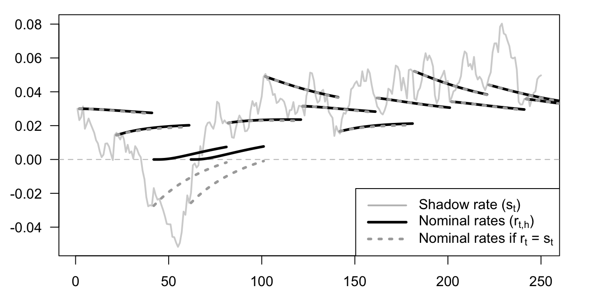
7.2 Shadow-rate bond pricing and Monte Carlo validation
This example checks shadow-rate bond pricing formulas against Monte Carlo simulation.
# Purpose: This example checks shadow-rate bond pricing formulas against Monte Carlo simulation
H <- 30
ell_bar <- 0
# Compute bond prices based on simulations:
selected_date <- 1
nb.replic <- 100000
model$Sigma12 <- matrix(sqrt(model$Sigma))
simul_s <- simul_GaussianVAR(model,nb.sim=H,x0=s[selected_date],nb.replic = nb.replic)
simul_s <- matrix(simul_s,H,nb.replic)
simul_r <- pmax(simul_s,ell_bar)
aux <- apply(simul_r,2,cumsum)
Bth <- exp(-aux)
aux <- apply(Bth,1,mean)
rth <- -log(aux)/(1:H)
res_WX <- compute_F_Shadow_Gaussian(s,
psi.parameterization = model,
ell_bar=ell_bar,
b=0,
a=matrix(1,1,1),
c=matrix(0,1,1),
H = H-1,
indic_WuXia = TRUE)
res_PR <- compute_F_Shadow_Gaussian(s,
psi.parameterization = model,
ell_bar=ell_bar,
b=0,
a=matrix(1,1,1),
c=matrix(0,1,1),
H = H-1,
indic_WuXia = FALSE)
res_affine <- compute_F_Shadow_affine(s,psi_GaussianVAR,
psi.parameterization = model,
ell_bar=ell_bar,
b=0,
a=matrix(1,1,1),
c=matrix(0,1,1),
H = H-1)
r <- pmax(ell_bar,s)
f_WX <- cbind(r,res_WX$F)
y_WX <- t(apply(f_WX,1,cumsum))/t(matrix(1:H,H,TT))
f_PR <- cbind(r,res_PR$F)
y_PR <- t(apply(f_PR,1,cumsum))/t(matrix(1:H,H,TT))
f_affine <- cbind(r,res_affine$F)
y_affine <- t(apply(f_affine,1,cumsum))/t(matrix(1:H,H,TT))
res_noLB <- compute_AB_classical(xi0=0,xi1=matrix(1),H = H,
psi = psi_GaussianVAR,
psi.parameterization = model)
y_noLB <- matrix(1,TT,1) %*% matrix(res_noLB$b,nrow=1) +
s %*% matrix(res_noLB$a,nrow=1)
plot(rth,lwd=3,col="grey",type="l",
ylim=c(min(rth,
y_WX[selected_date,],
y_PR[selected_date,],
y_affine[selected_date,]),
max(rth,
y_WX[selected_date,],
y_PR[selected_date,],
y_affine[selected_date,])))
lines(y_WX[selected_date,],col="darkgrey")
lines(y_PR[selected_date,],col="black")
lines(y_affine[selected_date,],col="grey50")
lines(y_noLB[selected_date,],col="grey70")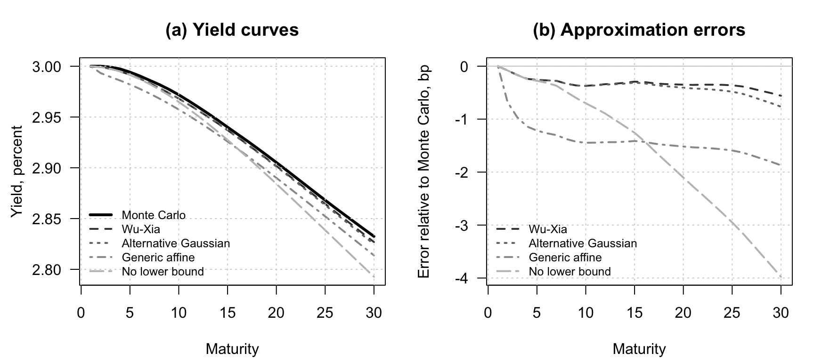
7.3 The lower bound changes conditional rate volatility across maturities
This example shows how the lower bound changes conditional rate volatility across maturities.
# Purpose: This example shows how the lower bound changes conditional rate volatility across
# maturities
library(expm)
# Set the maturities and helper function used in the truncated-normal moments.
all_h <- c(1,3,6)
g <- function(x){
x*pnorm(x) + dnorm(x)
}
max_y <- 100*res$all_sigma_n[max(all_h)]
# Compute and plot the conditional volatility of observed rates.
par(mfrow=c(1,1))
par(plt=c(.15,.95,.15,.95))
plot(s,type="l",
ylim=c(0,max_y),
col="white",xlab="",ylab="Conditional volat., in percent",
las=1)
grid()
count <- 0
for(h in rev(all_h)){
count <- count + 1
mu1t <- res$all_b_bar_n[h] + s %*% t(model$Phi%^%h) %*% delta1
sigma1 <- res$all_sigma_n[h]
ratio <- mu1t/sigma1
var_rt <- (mu1t^2 + sigma1^2)*pnorm(ratio) -
mu1t*sigma1*dnorm(ratio) - sigma1^2*g(ratio)^2
vol_rt <- 100*sqrt(var_rt)
lines(vol_rt,lwd=2,lty=length(all_h) + 1 - count)
}
# Add maturity labels.
legend_labels <- paste("h =", all_h)
legend("bottomright",legend = legend_labels,
lty=1:length(all_h),
lwd=2,
col= "black",
seg.len = 3)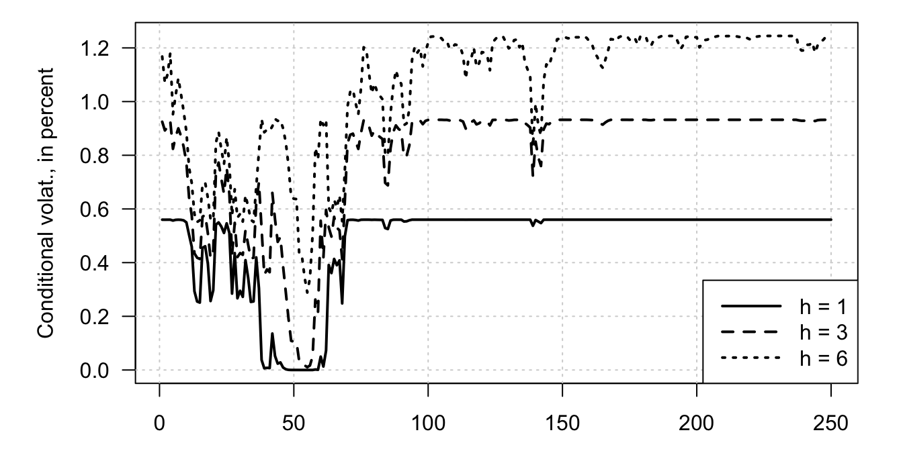
7.4 The shadow-rate idea in a small New Keynesian model with nominal and real curves
This example embeds the shadow-rate idea in a small New Keynesian model with nominal and real curves.
# Purpose: This example embeds the shadow-rate idea in a small New Keynesian model with nominal
# and real curves
library(DTAM)
r_star <- .03
pi_star <- .02
rho <- .5
phi <- .8
beta <- .2
alpha <- 1.5
gamma <- 0.5
sigma_r <- .005
sigma_pi <- .005
sigma_y <- .005
kappa <- .2
A0 <- diag(4)
A0[1,3] <- (rho-1)*alpha
A0[1,4] <- (rho-1)*gamma
# A0[4,3] <- -beta
A0_1 <- solve(A0)
mu <- A0_1 %*% matrix(c((1-rho)*(r_star - alpha*pi_star),0,0,
beta*(r_star-pi_star)),ncol=1)
Phi <- A0_1 %*% matrix(c(rho,1,0,-beta,
0,0,0,0,
0,0,1,beta,
0,0,kappa,phi+beta*kappa),4,4)
Sigma12 <- A0_1 %*% matrix(c(sigma_r,0,0,0,
0,0,sigma_pi,0,
0,0,0,sigma_y),4,3)
Sigma <- Sigma12 %*% t(Sigma12)
model <- list(mu = mu,Phi = Phi,
Sigma12 = Sigma12,Sigma=Sigma,
n_w=3)
print(abs(eigen(Phi)$values))## [1] 0.9077407 0.9077407 0.4854409 0.0000000TT <- 250
set.seed(123)
W <- simul_GaussianVAR(model,nb.sim = TT)
par(mfrow=c(1,1))
par(plt=c(.1,.98,.1,.98))
plot(W[,1],
ylim=c(min(W)-.01,max(W)+.03),
xlab="",ylab="",
# ylim=c(-.1,.2),
col="white",las=1)
abline(h=0,col="black",lty=3)
# grid()
lines(W[,1],col="lightgrey",lwd=2,lty=1)
lines(W[,3],col="lightgrey",lwd=2,lty=2)
lines(W[,4],col="lightgrey",lwd=2,lty=3)
# Compute shadow-rate forward rates with the Wu-Xia approximation.
H <- 40 # maximum maturity
res <- compute_F_Shadow_Gaussian(W,
psi.parameterization = model,
ell_bar=0,
b=0,
a=matrix(c(0,1,0,0),4,1),
c=matrix(c(0,0,1,0),4,1),
H = H)
f_nominal <- res$F_c_equal_0
f_real <- res$F
y_nominal <- t(apply(f_nominal,1,cumsum))/t(matrix(1:H,H,TT))
y_real <- t(apply(f_real,1,cumsum))/t(matrix(1:H,H,TT))
AB_GATSM <-
compute_AB_classical(xi0=0,
xi1=matrix(c(1,0,0,0),ncol=1),
kappa0 = 0, kappa1 = matrix(c(0,0,-1,0),ncol=1),
H = H,
psi = psi_GaussianVAR,psi.parameterization = model)
y_noSR_nominal <- t(matrix(AB_GATSM$b[,1,],H,TT)) + W %*% matrix(AB_GATSM$a[,1,],ncol=H)
y_noSR_real <- t(matrix(AB_GATSM$b[,2,],H,TT)) + W %*% matrix(AB_GATSM$a[,2,],ncol=H)
all_t <- seq(1,TT,by=H+10)
for(t in all_t){
lines((t+1):(t+H),y_nominal[t,],type="l",col="black",lwd=3)
lines((t+1):(t+H),y_real[t,],type="l",col="darkgrey",lwd=3)
lines((t+1):(t+H),y_noSR_nominal[t,],type="l",col="black",lwd=3,lty=3)
lines((t+1):(t+H),y_noSR_real[t,],type="l",col="darkgrey",lwd=3,lty=3)
}
legend("topright",
c(expression(paste("Shadow rate (",s[t],")",sep="")),
expression(paste("Inflation (",pi[t],")",sep="")),
expression(paste("Output gap (",y[t],")",sep=""))),
lty=c(1,2,3),
lwd=c(2,2,2),
pt.cex = 1,
col= "lightgrey",
seg.len = 3)
legend("topleft",
c(expression(paste("Nominal rates (",r[t*','*h],")",sep="")),
expression(paste("Nominal rates if ",r[t]," = ",s[t],sep="")),
expression(paste("Real rates (",tilde(r)[t*','*h],")",sep="")),
expression(paste("Real rates if ",r[t]," = ",s[t],sep=""))),
lty=c(1,3,1,3),
lwd=c(3,3,3,3),
pt.cex = 1,
col= c("black","black","darkgrey","darkgrey"),
seg.len = 3)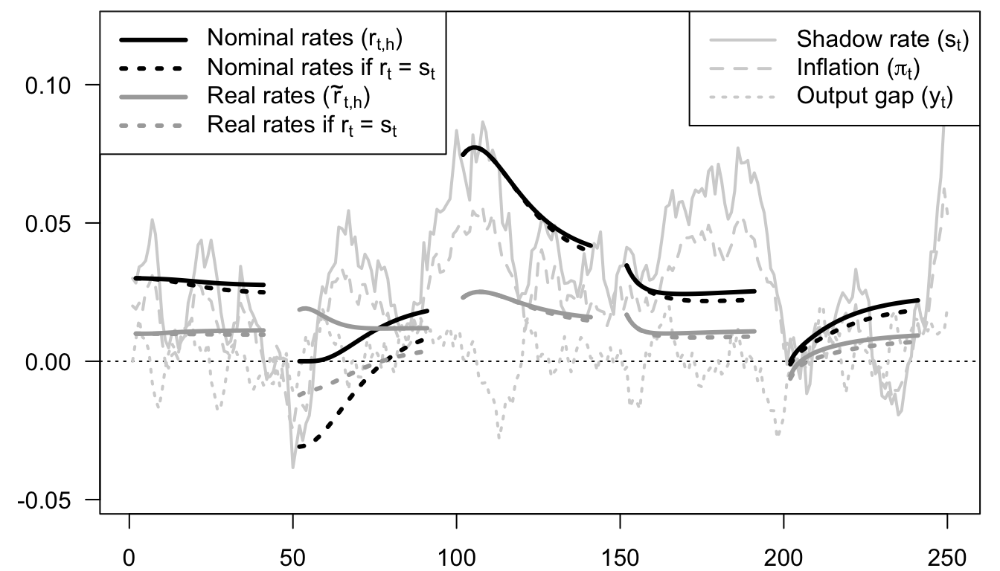
7.5 Shadow-rate pricing of defaultable bond spreads
This example uses a shadow-rate pricing device to illustrate defaultable bond spreads in a structural credit model.
# Purpose: This example uses a shadow-rate pricing device to illustrate defaultable bond spreads
# in a structural credit model
library(DTAM)
# Specify output gap's (z_t) dynamics:
rho <- .8
sigma <- .02
gamma <- 2 # RRA coefficient
delta <- .995 # subjective time discount
mu <- .015 # average consumption growth
kappa <- 2 # sensitivity of default intensity to output gap
Phi <- matrix(c(rho,1,0,0),2,2)
Sigma12 <- matrix(c(sigma,0),2,1)
Sigma <- Sigma12 %*% t(Sigma12)
model <- list(mu = matrix(0,2,1), Phi = Phi,
Sigma = Sigma,Sigma12 = Sigma12,
n_w=2)
# Simulate z:
TT <- 100
set.seed(123)
W <- simul_GaussianVAR(model,nb.sim = TT)
# plot(W[,1],type="l")
mu_c1 <- matrix(c(1,-1),2,1)
dc <- mu + W %*% mu_c1
# plot(cumsum(dc),type="l")
H <- 10 # maximum maturity
res_default <- compute_F_Shadow_Gaussian(W,
psi.parameterization = model,
ell_bar=0,
b=0,
a=matrix(c(-kappa,0),2,1),
c=matrix(c(-gamma,gamma),2,1),
H = H)
res_rf <- compute_F_Shadow_Gaussian(W,
psi.parameterization = model,
ell_bar=0,
b=0,
a=.00001*matrix(c(-kappa,0),2,1),
c=matrix(c(-gamma,gamma),2,1),
H = H)
f_PD <- res_default$F_c_equal_0
f_bond <- res_default$F
f_rf <- res_rf$F
y_PD <- t(apply(f_PD,1,cumsum))/t(matrix(1:H,H,TT))
y_rf <- -log(delta) + gamma*mu + t(apply(f_rf,1,cumsum))/t(matrix(1:H,H,TT))
y_bond <- -log(delta) + gamma*mu + t(apply(f_bond,1,cumsum))/t(matrix(1:H,H,TT))
par(mfrow=c(2,1))
par(plt=c(.11,.98,.13,.8))
plot(W[,1],col="white",xlab="",ylab="",las=1,
main = expression(paste("(a) Output gap (",z[t],")",sep="")))
grid()
abline(h=0,col="grey")
lines(W[,1],lwd=2)
plot(y_bond[,H],type="l",col="white",las=1,
ylim=c(0,.13),xlab="",ylab="",
main=expression(paste("(b) Bond yields",sep="")))
grid()
lines(y_rf[,H],col="darkgrey",lwd=2)
lines(y_bond[,H],col="black",lwd=2,lty=1)
lines(y_bond[,H]-y_rf[,H],col="black",lwd=2,lty=3)
legend("topright",
c(expression(paste("Risk-free rate (",tilde(r)[t*','*h],")",sep="")),
expression(paste("Defaultable-bond rate (",{r^d}[t*','*h],")",sep="")),
expression(paste("Credit spread (",{r^d}[t*','*h]-tilde(r)[t*','*h],")",sep=""))),
lty=c(1,1),
lwd=c(2,2),
pt.cex = 1,
col= c("darkgrey","black"),
seg.len = 3)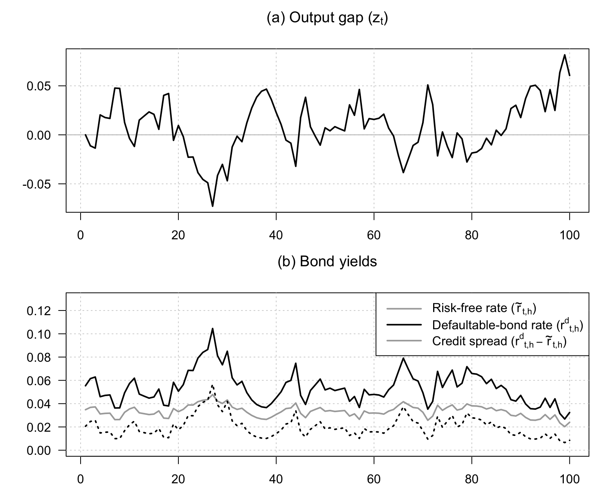
7.6 Shadow default intensity and credit spreads in a fiscal-limits setting
This example studies shadow default intensity and credit spreads in a fiscal-limits setting.
# Purpose: This example studies shadow default intensity and credit spreads in a fiscal-limits
# setting
library(DTAM)
r_star <- .03
ell_star <- 1.1
d_star <- .9
sigma_r <- .005
sigma_ell <- .04
sigma_d <- .04
rho_r <- .9
rho_ell <- .98
rho_d <- .98
kappa <- .5
H <- 5 # bond maturity
# Specify state vector's dynamics (w_t = (r_t,ell_t,d_t,r_{t-1})'):
Phi <- diag(c(rho_r,rho_ell,rho_d,0))
Phi[4,1] <- 1
mu <- (diag(4) - Phi) %*% c(r_star,
ell_star,d_star,r_star)
Sigma12 <- diag(c(sigma_r,sigma_ell,sigma_d,0))
Sigma <- Sigma12 %*% t(Sigma12)
model <- list(mu = mu, Phi = Phi,
Sigma = Sigma,Sigma12 = Sigma12,
n_w=4)
# Simulate model:
TT <- 100
set.seed(123)
W <- simul_GaussianVAR(model,nb.sim = TT)
par(mfrow=c(2,2))
par(plt=c(.15,.95,.15,.85))
plot(W[,1],type="l",col="white",ylim=c(.01,.07),
xlab="",ylab="",las=1,
main=expression(paste("(a) Short-term interest rate (",r[t],")",sep="")))
grid()
lines(W[,1],lwd=2,col="black")
plot(W[,2],ylim=c(0,2),col="white",xlab="",ylab="",las=1,
main=expression(paste("(b) Debt and fiscal limit",sep="")))
grid()
lines(W[,2],type="l",ylim=c(0,2),col="black",lwd=2,lty=1)
lines(W[,3],type="l",ylim=c(0,2),col="black",lwd=2,lty=3)
lines(W[,2]-W[,3],type="l",ylim=c(0,2),col="darkgrey",lwd=2,lty=1)
legend("topright",
c(expression(paste("Debt-to-GDP (",d[t],")",sep="")),
expression(paste("Fiscal limit (",l[t],")",sep="")),
expression(paste("Fiscal space (",l[t]," - ",d[t],")",sep=""))),
lty=c(3,1,1),
lwd=c(2,2,2),
pt.cex = 1,
col= c("black","black","darkgrey"),
seg.len = 3)
a <- matrix(c(0,-kappa,kappa,0),4,1)
c <- matrix(c(0,0,0,-1),4,1)
res_default <- compute_F_Shadow_Gaussian(W,
psi.parameterization = model,
ell_bar=0,
b=0,
a=a,
c=c,
H = H)
res_rf <- compute_F_Shadow_Gaussian(W,
psi.parameterization = model,
ell_bar=0,
b=0,
a=.00001*a,
c=c,
H = H)
# res_default <- compute_F_Shadow_affine(W,psi_GaussianVAR,
# psi.parameterization = model,
# ell_bar=0,
# b=0,
# a=.5*matrix(c(0,-1,1,1),4,1),
# c=matrix(c(-1,0,0,0),4,1),
# H = H)
# res_rf <- compute_F_Shadow_affine(W,psi_GaussianVAR,
# psi.parameterization = model,
# ell_bar=0,
# b=0,
# a=.00001*matrix(c(0,-1,1,1),4,1),
# c=matrix(c(-1,0,0,0),4,1),
# H = H)
f_PD <- res_default$F_c_equal_0
f_bond <- res_default$F
f_rf <- res_rf$F
y_PD <- t(apply(f_PD,1,cumsum))/t(matrix(1:H,H,TT))
y_rf <- t(apply(f_rf,1,cumsum))/t(matrix(1:H,H,TT))
y_bond <- t(apply(f_bond,1,cumsum))/t(matrix(1:H,H,TT))
plot(y_bond[,H],type="l",col="white",las=1,
ylim=c(0.01,.1),xlab="",ylab="",
main=expression(paste("(c) Long-term interest rates",sep="")))
grid()
lines(y_rf[,H],col="darkgrey",lwd=2)
lines(y_bond[,H],col="black",lwd=2,lty=3)
legend("topright",
c(expression(paste("Risk-free (",tilde(r)[t*','*h],")",sep="")),
expression(paste("Defaultable (",{r^d}[t*','*h],")",sep=""))),
lty=c(1,3),
lwd=c(2,2),
pt.cex = 1,
col= c("darkgrey","black"),
seg.len = 3)
# Check pricing formula ------------------------------------------------------
# n <- length(model$mu)
# nb.replic <- 10000
# all_P <- NULL
# for(i in 1:nb.replic){
# sum_c <- 0
# sum_max <- 0
# w <- W
# for(h in 1:H){
# w <- t(matrix(model$mu,n,TT)) + w %*% t(model$Phi) +
# matrix(rnorm(TT*n),TT,n) %*% t(model$Sigma12)
# sum_c <- sum_c + w %*% c
# sum_max <- sum_max + pmax(0,w %*% a)
# }
# P <- exp(sum_c - sum_max)
# all_P <- cbind(all_P,P)
# }
# P_simul <- apply(all_P,1,mean)
# y_simul <- -log(P_simul)/H
# lines(y_simul,col="red",lwd=2,lty=3)
# -----------------------------------------------------------------------------
# Probability of default:
PD <- 1 - exp(t(apply(f_PD,1,cumsum)))
plot(10000*(y_bond[,H]-y_rf[,H]),type="l",col="white",las=1,
ylim=10000*c(0,.045),xlab="",ylab="",
main=expression(paste("(d) Credit spread (in bps)",sep="")))
grid()
lines(10000*y_PD[,H],col="grey",lwd=2)
lines(10000*(y_bond[,H]-y_rf[,H]),col="black",lwd=2,lty=3)
legend("topleft",
c(expression(paste("Credit spread (",{r^d}[t*','*h]," - ",tilde(r)[t*','*h],")",sep="")),
expression(paste("Default probability (annualized)",sep=""))),
lty=c(3,1),
lwd=c(2,2),
pt.cex = 1,
col= c("black","darkgrey"),
seg.len = 3)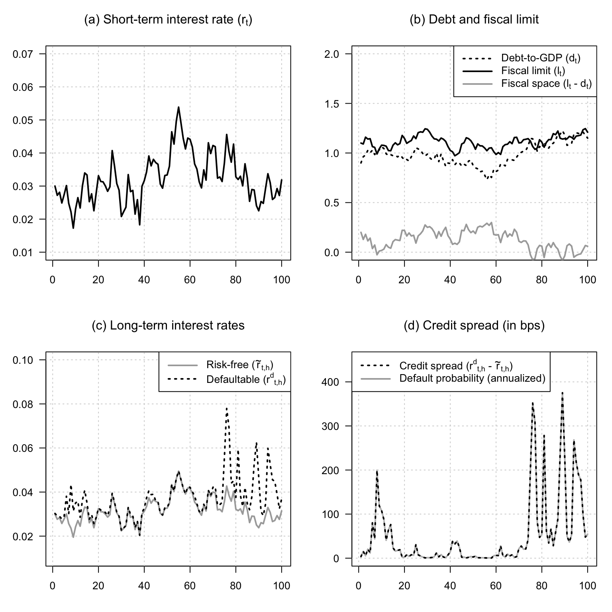
7.7 Non-Gaussian shadow-rate model with jump-like factors
This example illustrates a non-Gaussian shadow-rate model with jump-like factors and compares constrained and unconstrained curves.
# Purpose: This example illustrates a non-Gaussian shadow-rate model with jump-like factors and
# compares constrained and unconstrained curves
set.seed(7)
model <- (list(
alpha = matrix(c(.0,.0),ncol=1),
nu = matrix(c(.2,.2),ncol=1),
mu = matrix(c(.01,.01),ncol=1),
beta = NaN,
n_w = 2
))
model$beta <- .95*diag(1/c(model$mu))
TT = 150
simX <- t(simul_VARG(model,nb_periods = TT-1))
DeltaNplus <- rpois(n = TT,simX[,1])
DeltaNminus <- rpois(n = TT,simX[,2])
Nplus <- cumsum(DeltaNplus)
Nminus <- cumsum(DeltaNminus)
par(mfrow=c(2,1))
par(plt=c(.1,.9,.15,.85))
scaled_simX <- simX * 10
maxN <- max(Nplus,Nminus)+2
plot(1:TT,rep(0,TT),las=1,col="white",
ylim=c(0,maxN),xlab="",ylab="",
main=expression(paste("(a) Simulated state variables",sep="")))
grid()
Nvalues <- 1:maxN
ylabels_z <- seq(0,maxN/10,by=.2)
axis(side=4,at=10*ylabels_z,labels=ylabels_z,las=1)
lines(scaled_simX[,1],col="black",lwd=2)
lines(scaled_simX[,2],col="darkgrey",lwd=2)
lines(Nplus,col="black",lwd=3,lty=3)
lines(Nminus,col="darkgrey",lwd=3,lty=3)
legend("topleft",
c(expression(paste(N[t]^{'+'}," (lhs)",sep="")),
expression(paste(N[t]^{'-'}," (lhs)",sep="")),
expression(paste(z[t]^{'+'}," (rhs)",sep="")),
expression(paste(z[t]^{'-'}," (rhs)",sep=""))),
lty=c(3,3,1,1),
lwd=c(3,3,2,2),
pt.cex = 1,
col= c("black","darkgrey","black","darkgrey"),
seg.len = 3)
# Determine state vector
W <- cbind(simX,
Nplus,Nminus)
# Shadow rate specification:
xi0 <- .0025
xi1 <- matrix(c(0,0,.25/100,-.25/100),ncol=1)
s <- xi0 + W %*% xi1
plot(0*s,col="white",type="l",lwd=2,las=1,ylim=c(-.01,.025),
xlab="",ylab="",
main=expression(paste("(b) Term structures of interest rates (w/ and w/o lower bound)")))
grid()
abline(h=0,col="black",lty=2)
lines(s,col="darkgrey",lwd=2)
model$n_w <- 4 # update number of factors.
HH <- 30 # Maximum bond maturity
# Compute bond prices without LB:
res <- compute_AB_classical(xi0, xi1, kappa0 = NaN, kappa1 = NaN,
H=HH, psi=psi_VARG_Poisson,
psi.parameterization=model)
yields <- matrix(1,TT,1) %*% matrix(res$b,nrow=1) +
W %*% matrix(res$a,dim(res$a)[1],dim(res$a)[3])
# Compute bond prices without LB:
F_affine <- compute_F_Shadow_affine(W=W,psi_VARG_Poisson,
psi.parameterization=model,
ell_bar=0,b=xi0,a=xi1,c=0*xi1,
H=HH,
eps = 10^(-6), # to compute dG
max_x = 1000,
dx_statio = 1,
min_dx = 1e-06,
nb_x1 = 500)
f_bond <- cbind(pmax(0,s),F_affine$F[,1:(HH-1)])
yields_SR <- t(apply(f_bond,1,cumsum))/t(matrix(1:HH,HH,TT))
all_ts <- seq(5,TT-HH,by=HH+5)
for(t in all_ts){
lines((t+1):(t+HH),yields[t,],col="black",lwd=3,lty=3)
lines((t+1):(t+HH),yields_SR[t,],col="black",lwd=3)
}
legend("topleft",
c(expression(s[t]),
expression(paste(r[t*','*h]," when ",r[t]," = max(",s[t],",0)",sep="")),
expression(paste(r[t*','*h]," when ",r[t]," = ",s[t],sep=""))),
lty=c(1,1,3),
lwd=c(2,3,3),
pt.cex = 1,
col= c("darkgrey","black","black"),
seg.len = 3)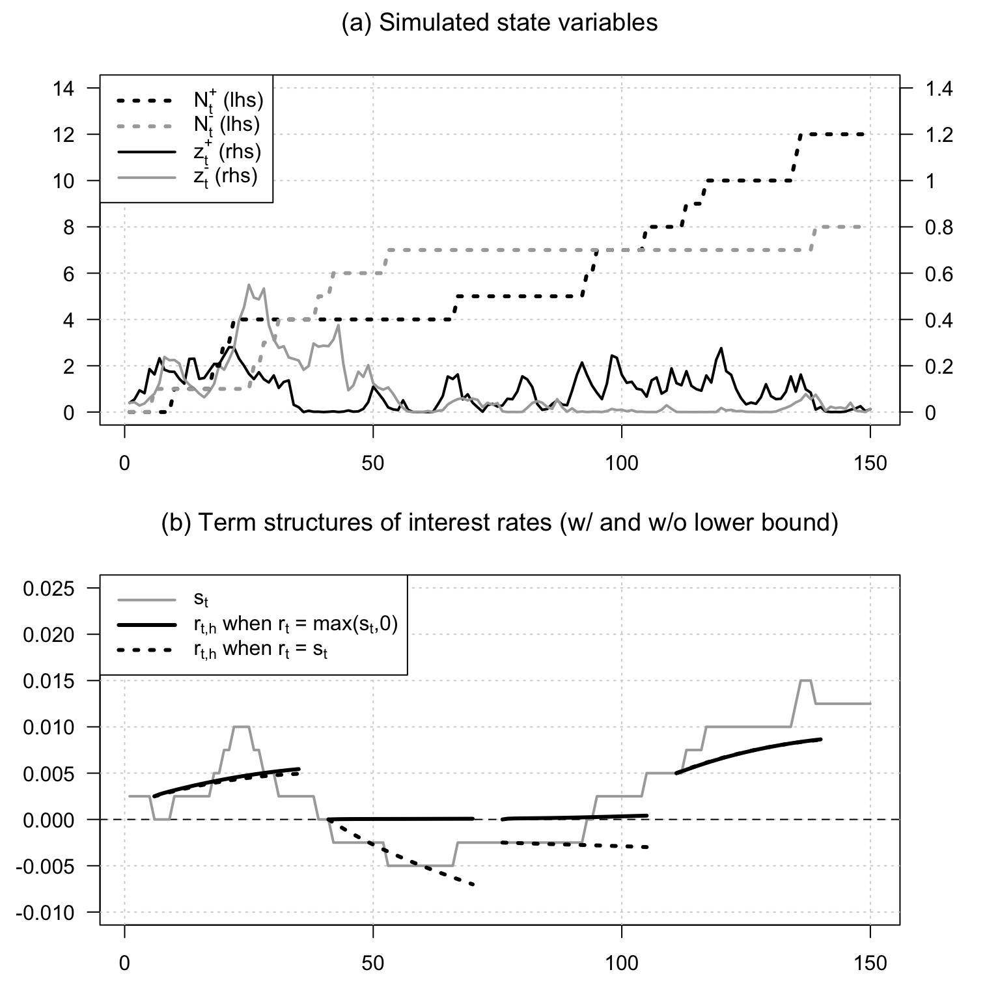
7.8 Shadow rate with ARG stochastic volatility
This example combines a shadow rate with stochastic volatility driven by an ARG factor.
# Purpose: This example combines a shadow rate with stochastic volatility driven by an ARG
# factor
set.seed(1)
TT <- 200
psi_AR_CH <- function(u,psi.parameterization){
# Laplace transform of a process defined as follows:
# s_{t+1} = mu + phi·s_{t} + sqrt(z_t)·eps_{t+1}, with eps_t ~ N(0,1) and
# z_t ARG(nu,beta,mu_z)
mu <- psi.parameterization$mu
phi <- psi.parameterization$phi
nu <- psi.parameterization$nu
mu_z <- psi.parameterization$mu_z
beta <- psi.parameterization$beta
u <- matrix(u,nrow=2)
k <- dim(u)[2]
u_s <- u[1,]
u_z <- u[2,]
b <- u_s*mu - nu*log(1 - mu_z*u_z)
a <- matrix(NaN,2,k)
a[1,] <- u_s * phi
a[2,] <- beta*mu_z*u_z/(1 - mu_z*u_z) + u_s^2/2
return(list(a = a, b = b))
}
Es <- .02
phi <- .95
phi_z <- .95
mu_z <- .000015
nu <- .3
model <- list(mu = Es*(1-phi), phi = phi,
nu = nu, mu_z = mu_z, beta = phi_z/mu_z,
n_w = 2)
sim_z <- simul_ARG(nb.sim=TT,
mu = model$mu_z,
nu = model$nu,
rho = phi_z)
Es <- model$mu/(1 - model$phi)
s <- Es
sim_s <- s
for(t in 2:TT){
s <- model$mu + model$phi * s + sqrt(sim_z[t])*rnorm(1)
sim_s <- c(sim_s,s)
}
W <- cbind(sim_s,sim_z)
s <- W[,1]
# Shadow rate specification:
xi0 <- 0
xi1 <- matrix(c(1,0),ncol=1)
HH <- 20 # Maximum bond maturity
# Compute bond prices without LB:
res <- compute_AB_classical(xi0, xi1, kappa0 = NaN, kappa1 = NaN,
H=HH, psi=psi_AR_CH,
psi.parameterization=model)
yields <- matrix(1,TT,1) %*% matrix(res$b,nrow=1) +
W %*% matrix(res$a,dim(res$a)[1],dim(res$a)[3])
# Compute bond prices with LB:
F_affine <- compute_F_Shadow_affine(W=W,psi_AR_CH,
psi.parameterization=model,
ell_bar=0,b=xi0,a=xi1,c=0*xi1,
H=HH,
eps = 10^(-6), # to compute dG
max_x = 1000,
dx_statio = 1,
min_dx = 1e-06,
nb_x1 = 500)
f_bond <- cbind(pmax(0,s),F_affine$F[,1:(HH-1)])
yields_SR <- t(apply(f_bond,1,cumsum))/t(matrix(1:HH,HH,TT))
par(mfrow=c(2,1))
par(plt=c(.1,.95,.15,.85))
plot(sim_s,type="l",las=1,col="white",xlab="",ylab="",
main=expression(paste("(a) State variables (",s[t]," and ",z[t],")",sep="")))
grid()
abline(h=0,col="grey")
lines(sim_s,col="grey",lwd=2,lty=1)
lines(3*sqrt(sim_z),col="black",lwd=1)
# Compute conditional variance of r_t:
mu1t <- model$mu + model$phi * sim_s
sigma1 <- sqrt(sim_z)
ratio <- mu1t/sigma1
var_rt <- (mu1t^2 + sigma1^2)*pnorm(ratio) -
mu1t*sigma1*dnorm(ratio) - sigma1^2*g(ratio)^2
lines(3*sqrt(var_rt),lwd=2,lty=3,col="black")
legend("topleft",
c(expression(s[t]),
expression(paste(sqrt(z[t])," (x3)",sep="")),
expression(paste(sqrt(Var(r[t]))," (x3)",sep=""))
),
lty=c(1,1,3),
lwd=c(2,1,2),
pt.cex = 1,
col= c("grey","black","black"),
seg.len = 3)
plot(0*s,col="white",type="l",lwd=2,las=1,ylim=c(-.03,.08),
xlab="",ylab="",
main=expression(paste("(b) Term structures of interest rates (w/ and w/o lower bound)")))
grid()
abline(h=0,col="grey")
lines(s,col="darkgrey",lwd=2)
all_ts <- seq(1,TT,by=HH+1)
for(t in all_ts){
lines((t+1):(t+HH),yields[t,],col="black",lwd=3,lty=3)
lines((t+1):(t+HH),yields_SR[t,],col="black",lwd=3)
}
legend("topleft",
c(expression(s[t]),
expression(paste(r[t*','*h]," when ",r[t]," = max(",s[t],",0)",sep="")),
expression(paste(r[t*','*h]," when ",r[t]," = ",s[t],sep=""))),
lty=c(1,1,3),
lwd=c(2,3,3),
pt.cex = 1,
col= c("darkgrey","black","black"),
seg.len = 3)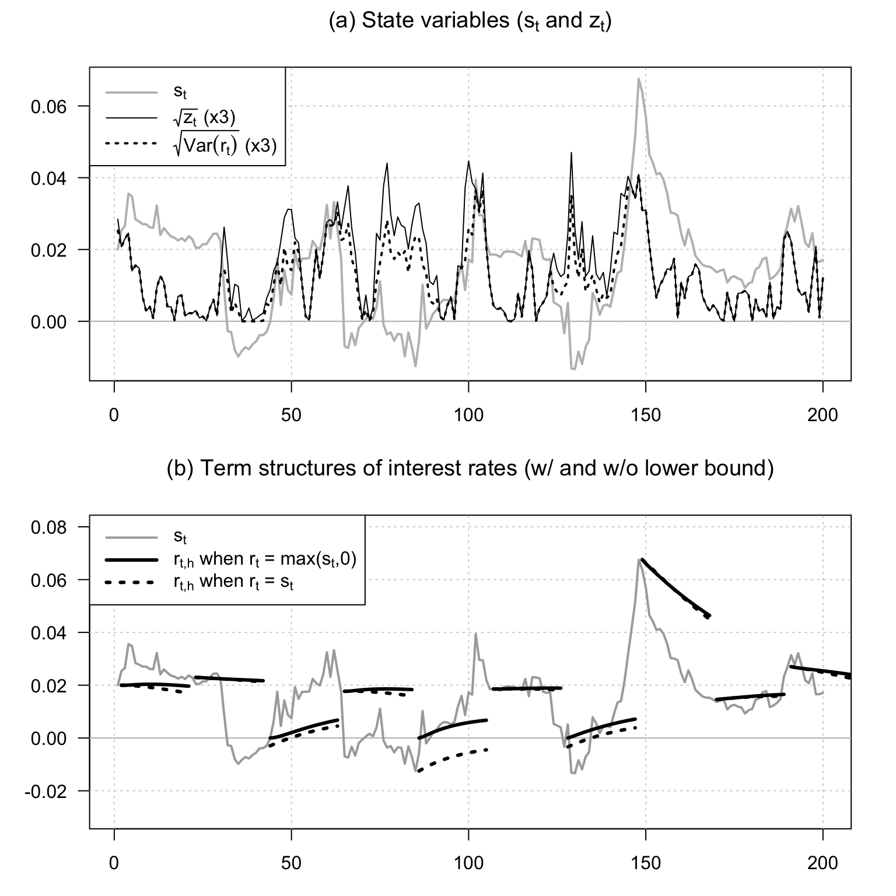
7.9 Affine-transform methods to a simple climate-finance model
This example applies affine-transform methods to a simple climate-finance model.
# Purpose: This example applies affine-transform methods to a simple climate-finance model
library(DTAM)
time_step_yrs <- 5
HH <- 200 # max maturity used to evaluate inter-temporal utility
model <- list(mu_c = .015*time_step_yrs,
gamma = 1.45,
et = .0075*time_step_yrs, # initial growth rate of carbon concentrations
E0 = 2170,
Et = 3315,
delta = 0.95,
mu_e = 0.001,
rho_e = .8,
rho = .99999,
S = 3,
alpha = .0018*time_step_yrs*1,
beta = .0018*time_step_yrs*1,
tau_star = 3,
rho_star = .9,
stdv_tau_star = .5,
Ct = 60*10^12, # Global consumption in 2025, in USD
n_w = 3)
psi_IAM <- function(u, psi.parameterization){
# This function returns the conditional Laplace transform of
# the state vector of the macro-climate model.
# The state vector is w_t = (e_t,tau_t,tau_t*)'.
mu_e <- psi.parameterization$mu_e
rho_e <- psi.parameterization$rho_e
rho <- psi.parameterization$rho
S <- psi.parameterization$S
alpha <- psi.parameterization$alpha
beta <- psi.parameterization$beta
tau_star <- psi.parameterization$tau_star
rho_star <- psi.parameterization$rho_star
sigma_star <- sqrt(1-rho_star^2)*psi.parameterization$stdv_tau_star
u <- matrix(u,nrow=3)
k <- dim(u)[2]
u_e <- matrix(u[1,],nrow=1)
u_tau <- matrix(u[2,],nrow=1)
u_star <- matrix(u[3,],nrow=1)
a <- matrix(0,3,k)
a[1,] <- rho_e*u_e/(1 - mu_e*u_e) + S/log(2)*u_tau
a[2,] <- rho*u_tau
a[3,] <- rho_star*u_star
b <- (u_star*tau_star*(1-rho_star) + u_star^2*sigma_star^2/2)
return(list(a = a, b = b))
}
# Compute distribution of the date of net-zero emissions -----------------------
u1 <- matrix(c(-1000,0,0),ncol=1)
res <- reverse_MHLT(psi_IAM,u1=u1,u2=0*u1,H=40,psi.parameterization = model)
A <- matrix(res$A,nrow=3)
B <- c(res$B)
P_net_zero <- exp(B + model$et*A[1,])
# Compute distribution of atmospheric carbon concentration in 2100 -------------
all_h <- c(2060,2080,2100)
step <- .025
values_tau <- seq(1.8,4.5,by=step)
PDF <- matrix(0,length(values_tau),length(all_h))
psi_tau <- function(u,model){
# This function returns E_t[exp(u·tau_{t+h})]
# The horizon h is one of the 'model' entries.
U <- rbind(0,1*c(u),0)
res <- reverse_MHLT(psi_IAM,
u1 = U,u2 = 0*U,
H = h,model)
Xt <- matrix(c(model$et,model$S/log(2)*log(model$Et/model$E0),model$tau_star),ncol=1)
psi <- exp(res$B[1,1,h] + t(res$A[,,model$h]) %*% Xt)
return(psi)
}
count_h <- 0
for(h in all_h){
count_h <- count_h + 1
model$h <- (h - 2025)/time_step_yrs
PDF[,count_h] <- make_pdf(model,values.of.variable = values_tau,
psi=psi_tau, max_x = 500, min_x = 10^(-5),
nb_x = 1000)/step
}
par(mfrow=c(1,2))
par(plt=c(.12,.95,.2,.85))
plot(2025+time_step_yrs*(1:(length(P_net_zero)-1)),diff(P_net_zero),
col="white",xlab="Year",ylab="",las=1,
main=expression(paste("(a) Pdf of date of net-zero emissions (",e[t]," = 0)",sep="")))
grid()
lines(2025+time_step_yrs*(1:(length(P_net_zero)-1)),diff(P_net_zero),
type="l",lwd=2,xlab="Year",ylab="")
plot(values_tau, PDF[,1], type = "l", col = "white",
xlab = expression(paste("Temperature (", tau[t], "), in °C", sep = "")),
ylab = "", las = 1,
main=expression(paste("(b) Pdf of temperature anomaly (",tau[t],")",sep="")))
grid()
for(i in 1:length(all_h)){
lines(values_tau,PDF[,i],lty=i,lwd=2)
}
legend("topright",legend=all_h,
lty=c(1,2,3),
lwd=2,
pt.cex = 1,
col= "black",
seg.len = 3)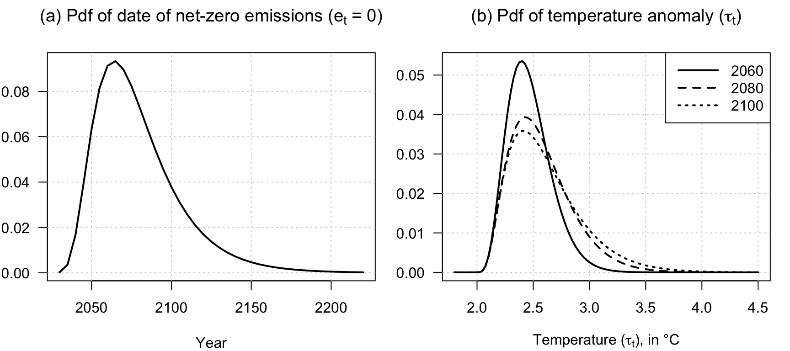
The next chunk computes the social cost of carbon in the affine climate-finance model, first with and then without the risk-premium component.
# Purpose: Compute the social cost of carbon and separate the risk-premium component.
compute_SCC <- function(model,HH=200,
indic_compute_riskpremium = FALSE,
eps = 10^(-6), # to compute dG
max_x = 1000000,
dx_statio = 1000,
min_dx = 1e-06,
nb_x1 = 1000){
# This function computes the social of carbon (SCC) in the context of a small
# Integrated Assessment Model (IAM) featuring a form of stochastic tipping point.
W <- t(matrix(c(model$et,
model$S/log(2)*log(model$Et/model$E0),
model$tau_star),3,2))
# Use two values (i.e., two rows) to compute dU/dE
# Perturb emissions to approximate the marginal effect on utility.
epsE <- 1 # Delta E_t, in GtCO2
W[2,2] <- model$S/log(2)*log((model$Et + epsE)/model$E0)
a <- (model$gamma - 1) * matrix(c(0,model$beta,-model$beta),ncol=1)
c <- (model$gamma - 1) * matrix(c(0,model$alpha,0),ncol=1)
# Compute expected discounted marginal utility under the affine model.
F_affine <- compute_F_Shadow_affine(W=W,psi_IAM,
psi.parameterization=model,
ell_bar=0,
b=0,a=a,c=c,chi=1,
H=HH,eps = eps, # to compute dG
max_x = max_x,dx_statio = dx_statio,
min_dx = min_dx,nb_x1 = nb_x1)
f_bond <- F_affine$F - log(model$delta) - (1 - model$gamma)*model$mu_c
aux <- exp(t(apply(-cbind(0,f_bond),1,cumsum)))
Ct <- model$Ct*time_step_yrs # $tr, 2024
U <- Ct^(1 - model$gamma)/(1 - model$gamma) * apply(aux,1,sum)
dU <- (U[2] - U[1])/epsE
SCC <- -Ct^(model$gamma) * dU / 10^9 # /10^9 because eps is in GtCO2
if(indic_compute_riskpremium){
# Compute the SDF discount factors used to isolate the risk-premium component.
a <- model$gamma * matrix(c(0,model$beta,-model$beta),ncol=1)
c <- model$gamma * matrix(c(0,model$alpha,0),ncol=1)
F_affine_SDF <- compute_F_Shadow_affine(W=W,psi_IAM,
psi.parameterization=model,
ell_bar=0,
b=0,a=a,c=c,chi=1,
H=HH,eps = eps, # to compute dG
max_x = max_x,dx_statio = dx_statio,
min_dx = min_dx,nb_x1 = nb_x1)
f_bond <- F_affine_SDF$F - log(model$delta) + model$gamma*model$mu_c
DF <- exp(t(apply(-cbind(0,f_bond),1,cumsum))) # Discount factors
DF <- DF[1,]
# Compute the consumption response to the emissions perturbation.
a <- matrix(c(0,model$beta,-model$beta),ncol=1)
c <- - matrix(c(0,model$alpha,0),ncol=1)
F_affine_C <- compute_F_Shadow_affine(W=W,psi_IAM,
psi.parameterization=model,
ell_bar=0,
b=0,a=a,c=c,chi=-1,
H=HH,eps = eps, # to compute dG
max_x = max_x,dx_statio = dx_statio,
min_dx = min_dx,nb_x1 = nb_x1)
f_bond <- F_affine_C$F - model$mu_c
C <- Ct * exp(t(apply(-cbind(0,f_bond),1,cumsum)))
dc_h <- (C[2,] - C[1,])/epsE
}else{
DF <- NaN
dc_h <- NaN
F_affine_SDF <- NaN
F_affine_C <- NaN
}
SCC_noRP <- sum(-dc_h * DF)/10^9
return(list(SCC=SCC,SCC_noRP=SCC_noRP,
U = U,
F_affine=F_affine,
F_affine_SDF=F_affine_SDF,
F_affine_C=F_affine_C,
DF=DF,C=C,dc_h=dc_h))
}
res_SCC <- compute_SCC(model,HH=HH,indic_compute_riskpremium=TRUE)
SCC <- res_SCC$SCC
# Print the SCC with and without the risk-premium component.
print(SCC)## [1] 746.4317## [1] 747.1965The following table records the calibration used in the social-cost-of-carbon exercise.
# Purpose: The following table records the calibration used in the social-cost-of-carbon
# exercise
# Load required package
library(xtable)
# ---- Parameters to exclude ----
exclude_params <- c("rho","alpha","beta","n_w","h","tau_star") # add any names you want to exclude
# Filter model list
model_filtered <- model[!names(model) %in% exclude_params]
# ---- Mapping between R names and LaTeX names ----
names_R <- c("mu_c","gamma","et","E0","Et","delta","mu_e","rho_e","rho","S",
"alpha","beta","tau_star","rho_star","stdv_tau_star","Ct")
names_Latex <- c(
"$\\mu_c$", # Mean consumption growth rate
"$\\gamma$", # Risk aversion
"$e_t$", # Carbon growth rate
"$\\mathcal{E}_0$", # Pre-industrial carbon stock
"$\\mathcal{E}_t$", # Current carbon stock
"$\\delta$", # Discount factor
"$\\mu_e$", # Mean carbon growth rate
"$\\rho_e$", # Persistence of carbon growth
"$\\rho$", # Persistence of carbon stock
"$S$", # ECS
"$\\alpha$", # Damage slope
"$\\beta$", # High-damage slope
"$\\tau_*$", # Tipping threshold
"$\\rho_*$", # Persistence of threshold
"$\\sigma(\\tau_t^*)$", # Volatility of threshold
"$C_t$" # Global consumption
)
# Create a lookup table
latex_map <- setNames(names_Latex, names_R)
# ---- Convert to data frame ----
param_df <- data.frame(
Parameter = names(model_filtered),
Value = unlist(model_filtered)
)
# Replace R names by LaTeX names
param_df$Parameter <- latex_map[param_df$Parameter]
# ---- Format numbers ----
param_df$Value <- formatC(param_df$Value, format = "g", digits = 5)
# ---- Optional descriptions ----
descriptions <- c(
"$\\mu_c$" = "Mean consumption growth rate (5 years)",
"$\\gamma$" = "Risk aversion coefficient",
"$e_t$" = "Initial carbon growth rate (5 years)",
"$\\mathcal{E}_0$" = "Pre-industrial carbon stock (GtCO$_2$)",
"$\\mathcal{E}_t$" = "Current carbon stock (GtCO$_2$)",
"$\\delta$" = "Time discount factor (5 years time step)",
"$\\mu_e$" = "Scale of carbon growth rate shocks",
"$\\rho_e$" = "Persistence of carbon growth rate",
"$S$" = "Equilibrium climate sensitivity (°C per doubling)",
"$\\alpha$" = "Baseline damage slope (change in 5-year consumpotion growth per °C)",
"$\\beta$" = "High-damage slope (change in 5-year consumpotion growth per °C",
"$\\tau_*$" = "Expected tipping threshold (°C)",
"$\\rho_*$" = "Persistence of tipping threshold",
"$\\sigma(\\tau_t^*)$" = paste0(
"Unconditional volatility of tipping threshold ",
"($\\sqrt{\\mathbb{V}ar(\\tau_t^*)}$, in °C)"
),
"$C_t$" = "Global consumption (USD)"
)
param_df$Description <- descriptions[param_df$Parameter]
# ---- Generate LaTeX table ----
latex_table <- c(
"\\begin{table}[ht]",
"\\centering",
"\\caption{This table reports the parameterization of the model used in Example~\\ref{exm.SCC}.}",
"\\label{tab:model_parameters}",
"\\begin{tabularx}{\\textwidth}{l r r X}",
"\\hline",
"Parameter & Value && Description \\\\",
"\\hline",
apply(param_df, 1, function(row) {
paste(row['Parameter'], '&', row['Value'], '&&', row['Description'], '\\\\')
}),
"\\hline",
"\\end{tabularx}",
"% ---- Add explanatory note below ----",
"\\vspace{0.3em}",
paste0(
"\\parbox{1.0\\textwidth}{\\footnotesize\\textit{Notes}: ",
"Calibration values are based on standard IAM assumptions for ",
"consumption growth and equilibrium climate sensitivity. Carbon stock ",
"and temperature parameters are consistent with historical data. The ",
"unconditional volatility of the threshold satisfies ",
"$\\sigma(\\tau_t^*) = \\sqrt{1-\\rho_*^2}\\sigma_*$.}"
),
"\\end{table}"
)
# ---- Save to file ----
output_dir <- "tables"
output_file <- file.path(output_dir, "table_param_SCC.txt")
if (!dir.exists(output_dir)) dir.create(output_dir, recursive = TRUE)
writeLines(latex_table, con = output_file)This figure shows how the social cost of carbon responds to the average tipping threshold and to the curvature of damages.
# Purpose: This figure shows how the social cost of carbon responds to the average tipping
# threshold and to the curvature of damages
# Define the baseline damage slopes and threshold grid.
alpha_baseline <- .001 * time_step_yrs * 1
model$alpha <- .001 * time_step_yrs * 1
model$beta <- .001 * time_step_yrs * 2
model$tau_star <- 2.5
all_alpha <- c(.5*alpha_baseline,alpha_baseline,alpha_baseline)
all_beta <- c(2*alpha_baseline,2*alpha_baseline,4*alpha_baseline)
all_tau_star <- rev(seq(2.25,4.25,by=.5))
SCC_matrix <- matrix(NaN,length(all_alpha),length(all_tau_star))
# Recompute the SCC over the damage and threshold scenarios.
for(i in 1:length(all_alpha)){
for(j in 1:length(all_tau_star)){
model$alpha <- all_alpha[i]
model$beta <- all_beta[i]
model$tau_star <- all_tau_star[j]
res_SCC <- compute_SCC(model,HH=HH,
indic_compute_riskpremium=TRUE,
eps = 10^(-6), # to compute dG
max_x = 10000,
dx_statio = 200,
min_dx = 1e-05,
nb_x1 = 500)
SCC_matrix[i,j] <- res_SCC$SCC
}
}
# Plot the SCC response curves.
par(mfrow=c(1,1))
par(plt=c(.15,.95,.2,.95))
plot(all_tau_star, 0 * all_tau_star, ylim = c(0, max(SCC_matrix)),
col = "white",
xlab = expression(paste("Average temperature threshold (",
tau['*'], "), in °C", sep = "")),
ylab = "Social Cost of Carbon, in USD/tCO2")
grid()
for(i in 1:length(all_alpha)){
spline_points <- spline(all_tau_star, SCC_matrix[i,], n = 50)
lines(spline_points$x,spline_points$y,lwd=2,lty=i)
# points(all_tau_star, SCC_matrix[i,],col="red")
}
legend_labels <- mapply(function(a, b) {
bquote(alpha == .(100*a/time_step_yrs)*"%, " ~ beta == .(100*b/time_step_yrs)*"%")
}, all_alpha, all_beta, SIMPLIFY = FALSE)
# Add legend
legend("topright", legend = legend_labels, lty = 1:3, lwd = 2)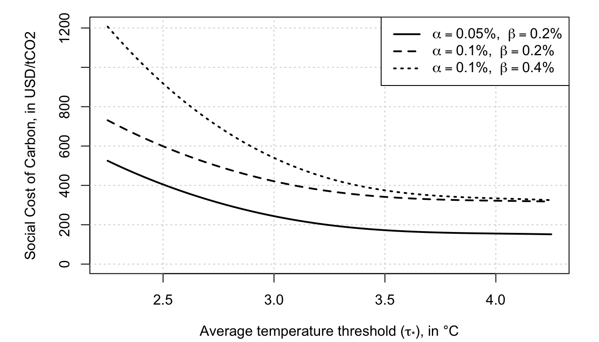
The final block checks the analytical formula against simulated paths of the climate-economy system.
# Purpose: Check the analytical formula against simulated climate-economy paths.
# Check formulas using simulations.
nb.replic <- 40000
TT <- 200
# Compute the analytical benchmark.
res_SCC <- compute_SCC(model,HH=TT,indic_compute_riskpremium=TRUE,
eps = 10^(-5), # to compute dG
max_x = 100000,
dx_statio =100,
min_dx = 1e-8,
nb_x1 = 10000)
model$sigma_star <- model$stdv_tau_star*sqrt(1-model$rho_star^2)
# Simulate the tipping threshold and the carbon stock.
res <-
simul_GaussianVAR(list(mu=model$tau_star*(1-model$rho_star),Phi = matrix(model$rho_star),
Sigma12 = matrix(model$sigma_star)),
nb.sim=TT,nb.replic = nb.replic)
sim_tau_star <- matrix(res,nrow=dim(res)[1])
sim_e <- simul_ARG(nb.sim = TT,
mu=model$mu_e,
alpha=0,
nu = 0,
rho = model$rho_e,
w0 = model$et,
nb.replic=nb.replic)
sim_logE <- log(model$Et) + apply(sim_e,2,cumsum)
epsE <- 1
sim_logE_dE <- log(model$Et + epsE) + apply(sim_e,2,cumsum)
sim_tau <- model$S/log(2)*(sim_logE - log(model$E0))
sim_tau_dE <- model$S/log(2)*(sim_logE_dE - log(model$E0))
sim_dc <- model$mu_c - model$alpha*sim_tau - model$beta*pmax(0,sim_tau - sim_tau_star)
sim_dc_demeaned <- - model$alpha*sim_tau - model$beta*pmax(0,sim_tau - sim_tau_star)
sim_dc_dE <- model$mu_c - model$alpha*sim_tau_dE - model$beta*pmax(0,sim_tau_dE - sim_tau_star)
# Compare simulated transform moments with the affine formula.
par(mfrow=c(1,2))
par(plt=c(.15,.95,.1,.9))
sim_exp_sum_dc <- exp(apply(log(model$delta)+(1-model$gamma)*sim_dc,2,cumsum))
sim_exp_sum_dc_dE <- exp(apply(log(model$delta)+(1-model$gamma)*sim_dc_dE,2,cumsum))
E_exp_sum_dc_simul <- apply(sim_exp_sum_dc,1,mean)
E_exp_sum_dc_dE_simul <- apply(sim_exp_sum_dc_dE,1,mean)
f <- res_SCC$F_affine$F - log(model$delta) - (1-model$gamma)*model$mu_c
E_exp_sum_dc_formula <- exp(t(apply(-f,1,cumsum)))
plot(E_exp_sum_dc_simul,type="l",lwd=2,col="grey")
lines(E_exp_sum_dc_formula[1,],col="black",lty=2)
plot(E_exp_sum_dc_dE_simul-E_exp_sum_dc_simul,type="l",lwd=2,col="grey",
ylim=c(min(E_exp_sum_dc_formula[2,]-E_exp_sum_dc_formula[1,]),
max(E_exp_sum_dc_formula[2,]-E_exp_sum_dc_formula[1,])))
lines(E_exp_sum_dc_formula[2,]-E_exp_sum_dc_formula[1,],col="black",lty=2)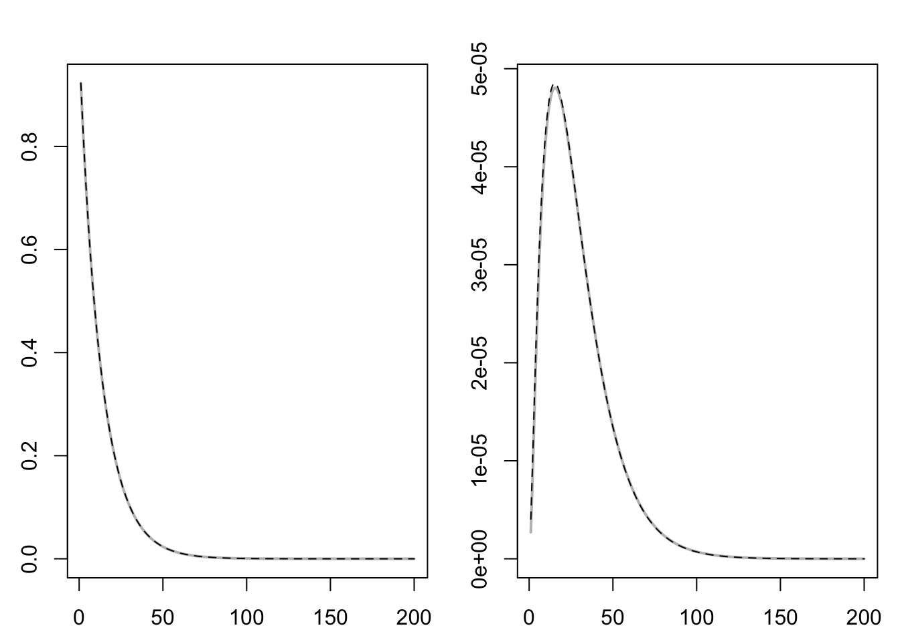
SCC_simul <- model$Ct*time_step_yrs/(model$gamma-1)*
(sum(E_exp_sum_dc_dE_simul) - sum(E_exp_sum_dc_simul))/epsE/10^9
# Print analytical and simulation-based SCC estimates.
print(cbind(res_SCC$SCC,SCC_simul))## SCC_simul
## [1,] 1211.177 1200.441